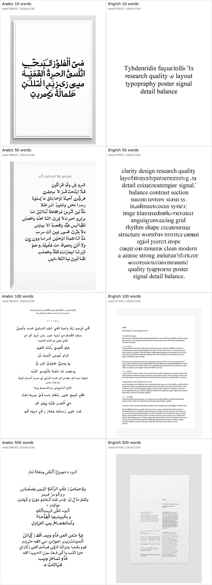
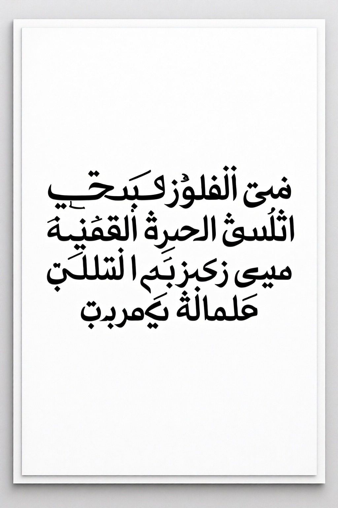
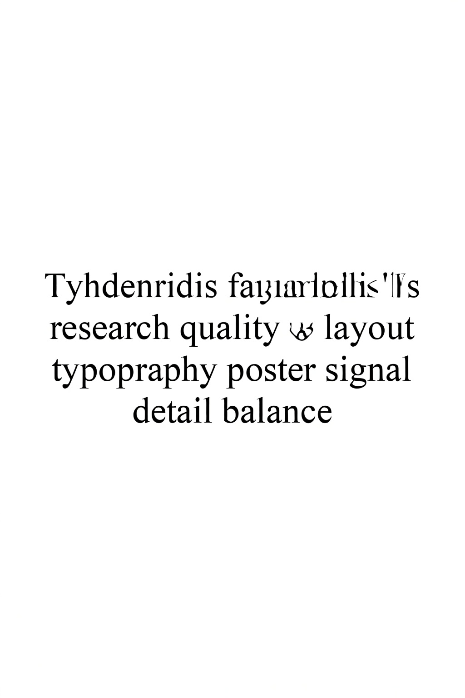
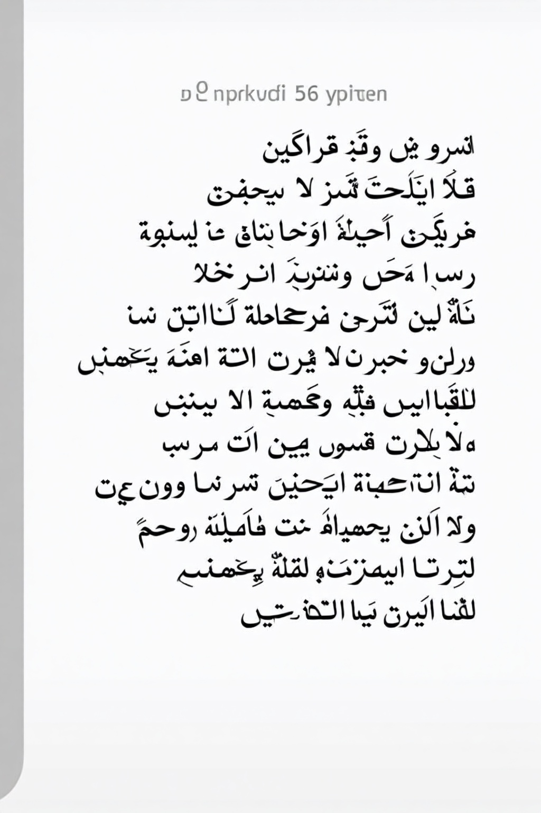
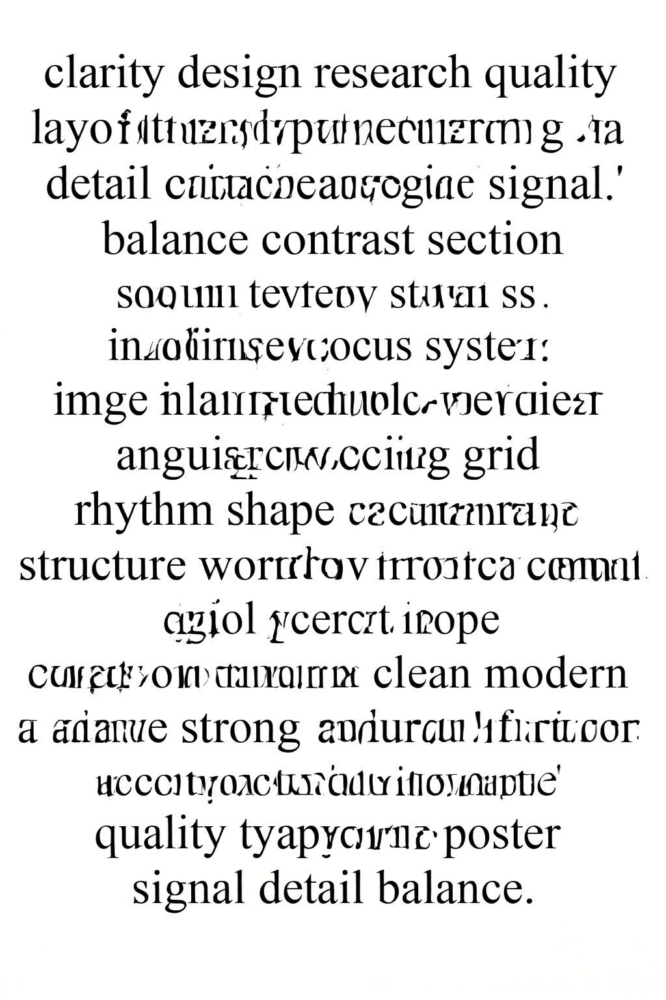
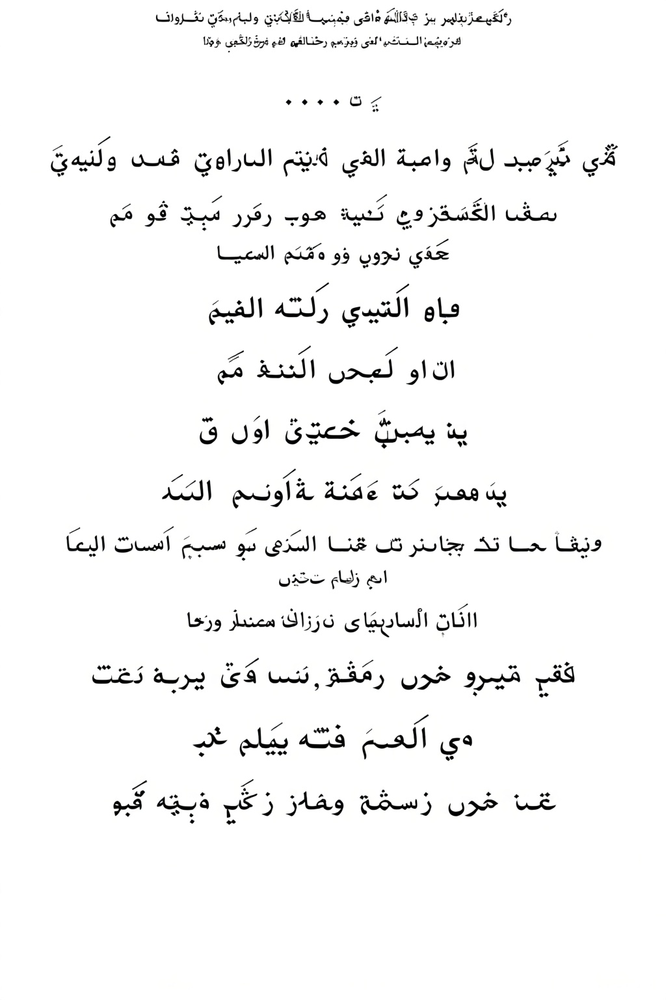
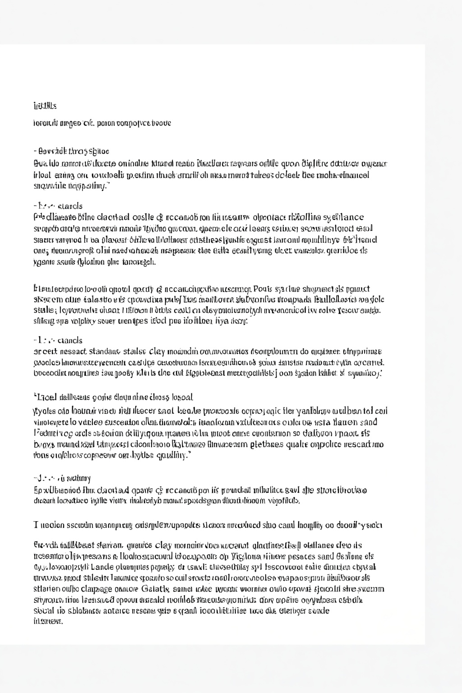
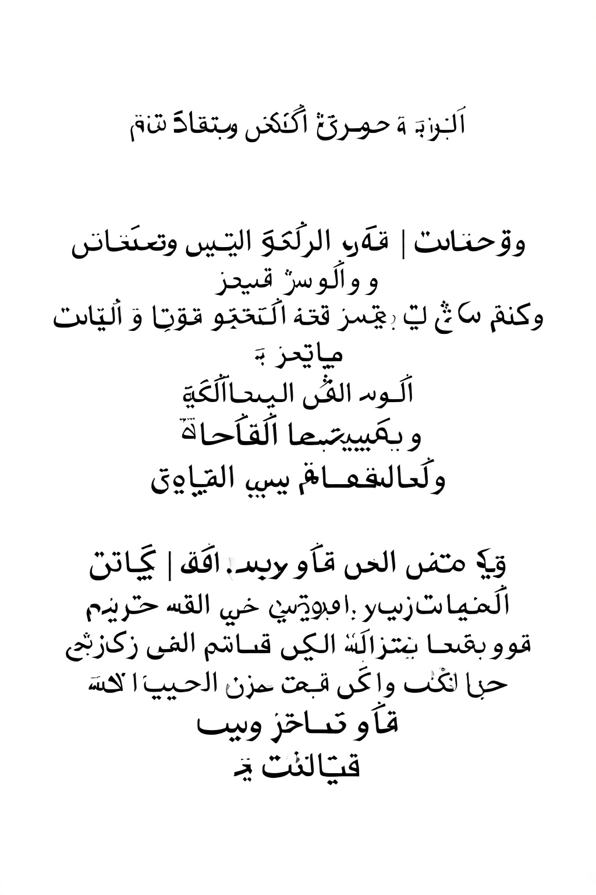
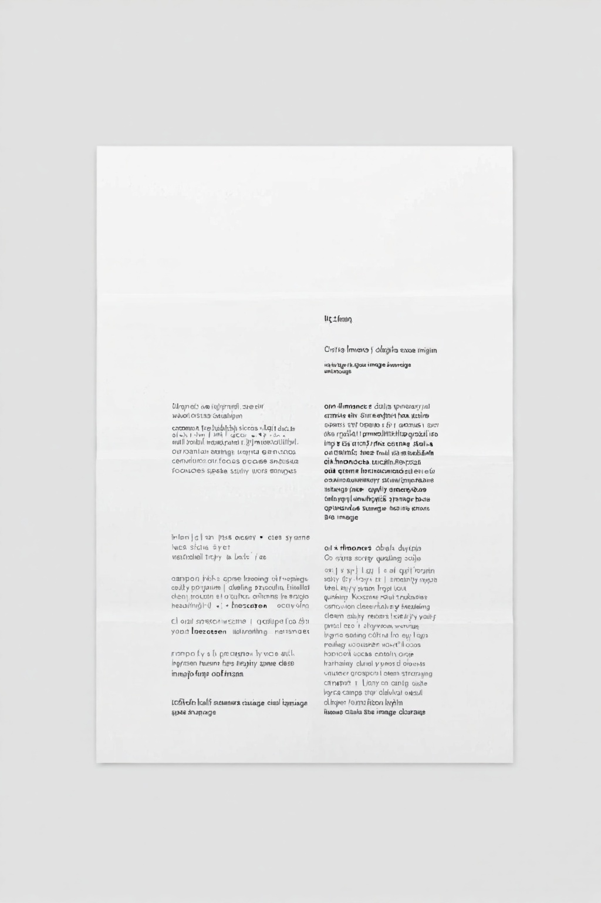

Experiment 06: Long Text Stress Test
English and Arabic only. Each prompt asks Qwen to typeset exact 10, 50, 100, and 500-word blocks on a portrait document-style poster. The API is run with max_sequence_length=1024, which is the highest value accepted by the current server.
Observed Result
The portrait format does not make exact text reliable. English 10 words partially preserves the requested vocabulary but already introduces malformed words; English 50 words keeps some recognizable words while corrupting many others; English 100 and 500 words collapse into page-like microtext rather than exact readable copy. Arabic remains malformed at 10, 50, 100, and 500 words, matching the earlier Arabic findings.
The 500-word case is intentionally unrealistic for a raster image generator. It is included as a failure-boundary test, not as a practical production target.
Contact Sheet

Individual Outputs

target words: 10
wall: 26.99s
Target text
تصميم واضح بحث جودة تخطيط طباعة ملصق إشارة تفاصيل توازن

target words: 10
wall: 26.76s
Target text
clarity design research quality layout typography poster signal detail balance

target words: 50
wall: 27.49s
Target text
تصميم واضح بحث جودة تخطيط طباعة ملصق إشارة تفاصيل توازن تباين هامش قسم عنوان شرح قارئ تركيز نظام صورة لغة نموذج بصري مسافة شبكة إيقاع شكل معنى سياق بنية مسار مراجعة عينة نتيجة موجه أسلوب نظيف حديث قوي دقيق ثابت تصميم واضح بحث جودة تخطيط طباعة ملصق إشارة تفاصيل توازن

target words: 50
wall: 27.09s
Target text
clarity design research quality layout typography poster signal detail balance contrast margin section headline caption reader focus system image language model visual spacing grid rhythm shape meaning context structure workflow review sample output prompt style clean modern strong accurate stable clarity design research quality layout typography poster signal detail balance

target words: 100
wall: 27.76s
Target text
تصميم واضح بحث جودة تخطيط طباعة ملصق إشارة تفاصيل توازن تباين هامش قسم عنوان شرح قارئ تركيز نظام صورة لغة نموذج بصري مسافة شبكة إيقاع شكل معنى سياق بنية مسار مراجعة عينة نتيجة موجه أسلوب نظيف حديث قوي دقيق ثابت تصميم واضح بحث جودة تخطيط طباعة ملصق إشارة تفاصيل توازن تباين هامش قسم عنوان شرح قارئ تركيز نظام صورة لغة نموذج بصري مسافة شبكة إيقاع شكل معنى سياق بنية مسار مراجعة عينة نتيجة موجه أسلوب نظيف حديث قوي دقيق ثابت تصميم واضح بحث جودة تخطيط طباعة ملصق إشارة تفاصيل توازن تباين هامش قسم عنوان شرح قارئ تركيز نظام صورة لغة

target words: 100
wall: 27.51s
Target text
clarity design research quality layout typography poster signal detail balance contrast margin section headline caption reader focus system image language model visual spacing grid rhythm shape meaning context structure workflow review sample output prompt style clean modern strong accurate stable clarity design research quality layout typography poster signal detail balance contrast margin section headline caption reader focus system image language model visual spacing grid rhythm shape meaning context structure workflow review sample output prompt style clean modern strong accurate stable clarity design research quality layout typography poster signal detail balance contrast margin section headline caption reader focus system image language

target words: 500
wall: 29.41s
Target text
تصميم واضح بحث جودة تخطيط طباعة ملصق إشارة تفاصيل توازن تباين هامش قسم عنوان شرح قارئ تركيز نظام صورة لغة نموذج بصري مسافة شبكة إيقاع شكل معنى سياق بنية مسار مراجعة عينة نتيجة موجه أسلوب نظيف حديث قوي دقيق ثابت تصميم واضح بحث جودة تخطيط طباعة ملصق إشارة تفاصيل توازن تباين هامش قسم عنوان شرح قارئ تركيز نظام صورة لغة نموذج بصري مسافة شبكة إيقاع شكل معنى سياق بنية مسار مراجعة عينة نتيجة موجه أسلوب نظيف حديث قوي دقيق ثابت تصميم واضح بحث جودة تخطيط طباعة ملصق إشارة تفاصيل توازن تباين هامش قسم عنوان شرح قارئ تركيز نظام صورة لغة نموذج بصري مسافة شبكة إيقاع شكل معنى سياق بنية مسار مراجعة عينة نتيجة موجه أسلوب نظيف حديث قوي دقيق ثابت تصميم واضح بحث جودة تخطيط طباعة ملصق إشارة تفاصيل توازن تباين هامش قسم عنوان شرح قارئ تركيز نظام صورة لغة نموذج بصري مسافة شبكة إيقاع شكل معنى سياق بنية مسار مراجعة عينة نتيجة موجه أسلوب نظيف حديث قوي دقيق ثابت تصميم واضح بحث جودة تخطيط طباعة ملصق إشارة تفاصيل توازن تباين هامش قسم عنوان شرح قارئ تركيز نظام صورة لغة نموذج بصري مسافة شبكة إيقاع شكل معنى سياق بنية مسار مراجعة عينة نتيجة موجه أسلوب نظيف حديث قوي دقيق ثابت تصميم واضح بحث جودة تخطيط طباعة ملصق إشارة تفاصيل توازن تباين هامش قسم عنوان شرح قارئ تركيز نظام صورة لغة نموذج بصري مسافة شبكة إيقاع شكل معنى سياق بنية مسار مراجعة عينة نتيجة موجه أسلوب نظيف حديث قوي دقيق ثابت تصميم واضح بحث جودة تخطيط طباعة ملصق إشارة تفاصيل توازن تباين هامش قسم عنوان شرح قارئ تركيز نظام صورة لغة نموذج بصري مسافة شبكة إيقاع شكل معنى سياق بنية مسار مراجعة عينة نتيجة موجه أسلوب نظيف حديث قوي دقيق ثابت تصميم واضح بحث جودة تخطيط طباعة ملصق إشارة تفاصيل توازن تباين هامش قسم عنوان شرح قارئ تركيز نظام صورة لغة نموذج بصري مسافة شبكة إيقاع شكل معنى سياق بنية مسار مراجعة عينة نتيجة موجه أسلوب نظيف حديث قوي دقيق ثابت تصميم واضح بحث جودة تخطيط طباعة ملصق إشارة تفاصيل توازن تباين هامش قسم عنوان شرح قارئ تركيز نظام صورة لغة نموذج بصري مسافة شبكة إيقاع شكل معنى سياق بنية مسار مراجعة عينة نتيجة موجه أسلوب نظيف حديث قوي دقيق ثابت تصميم واضح بحث جودة تخطيط طباعة ملصق إشارة تفاصيل توازن تباين هامش قسم عنوان شرح قارئ تركيز نظام صورة لغة نموذج بصري مسافة شبكة إيقاع شكل معنى سياق بنية مسار مراجعة عينة نتيجة موجه أسلوب نظيف حديث قوي دقيق ثابت تصميم واضح بحث جودة تخطيط طباعة ملصق إشارة تفاصيل توازن تباين هامش قسم عنوان شرح قارئ تركيز نظام صورة لغة نموذج بصري مسافة شبكة إيقاع شكل معنى سياق بنية مسار مراجعة عينة نتيجة موجه أسلوب نظيف حديث قوي دقيق ثابت تصميم واضح بحث جودة تخطيط طباعة ملصق إشارة تفاصيل توازن تباين هامش قسم عنوان شرح قارئ تركيز نظام صورة لغة نموذج بصري مسافة شبكة إيقاع شكل معنى سياق بنية مسار مراجعة عينة نتيجة موجه أسلوب نظيف حديث قوي دقيق ثابت تصميم واضح بحث جودة تخطيط طباعة ملصق إشارة تفاصيل توازن تباين هامش قسم عنوان شرح قارئ تركيز نظام صورة لغة

target words: 500
wall: 28.20s
Target text
clarity design research quality layout typography poster signal detail balance contrast margin section headline caption reader focus system image language model visual spacing grid rhythm shape meaning context structure workflow review sample output prompt style clean modern strong accurate stable clarity design research quality layout typography poster signal detail balance contrast margin section headline caption reader focus system image language model visual spacing grid rhythm shape meaning context structure workflow review sample output prompt style clean modern strong accurate stable clarity design research quality layout typography poster signal detail balance contrast margin section headline caption reader focus system image language model visual spacing grid rhythm shape meaning context structure workflow review sample output prompt style clean modern strong accurate stable clarity design research quality layout typography poster signal detail balance contrast margin section headline caption reader focus system image language model visual spacing grid rhythm shape meaning context structure workflow review sample output prompt style clean modern strong accurate stable clarity design research quality layout typography poster signal detail balance contrast margin section headline caption reader focus system image language model visual spacing grid rhythm shape meaning context structure workflow review sample output prompt style clean modern strong accurate stable clarity design research quality layout typography poster signal detail balance contrast margin section headline caption reader focus system image language model visual spacing grid rhythm shape meaning context structure workflow review sample output prompt style clean modern strong accurate stable clarity design research quality layout typography poster signal detail balance contrast margin section headline caption reader focus system image language model visual spacing grid rhythm shape meaning context structure workflow review sample output prompt style clean modern strong accurate stable clarity design research quality layout typography poster signal detail balance contrast margin section headline caption reader focus system image language model visual spacing grid rhythm shape meaning context structure workflow review sample output prompt style clean modern strong accurate stable clarity design research quality layout typography poster signal detail balance contrast margin section headline caption reader focus system image language model visual spacing grid rhythm shape meaning context structure workflow review sample output prompt style clean modern strong accurate stable clarity design research quality layout typography poster signal detail balance contrast margin section headline caption reader focus system image language model visual spacing grid rhythm shape meaning context structure workflow review sample output prompt style clean modern strong accurate stable clarity design research quality layout typography poster signal detail balance contrast margin section headline caption reader focus system image language model visual spacing grid rhythm shape meaning context structure workflow review sample output prompt style clean modern strong accurate stable clarity design research quality layout typography poster signal detail balance contrast margin section headline caption reader focus system image language model visual spacing grid rhythm shape meaning context structure workflow review sample output prompt style clean modern strong accurate stable clarity design research quality layout typography poster signal detail balance contrast margin section headline caption reader focus system image language
Prompts And Targets
Download CSV for this experiment
| Case | Seed | Words | Prompt |
|---|---|---|---|
| Arabic 10 words | 98010 | 10 | Create a clean portrait white document poster that typesets exactly this 10-word Arabic text block. Use black Arabic sans-serif typography, correct right-to-left shaping, clean margins, and simple line wrapping. Do not translate, do not summarize, do not add decorative letters, and do not add any extra words. Exact Arabic text block: "تصميم واضح بحث جودة تخطيط طباعة ملصق إشارة تفاصيل توازن" |
| English 10 words | 97010 | 10 | Create a clean portrait white document poster that typesets exactly this 10-word English text block. Use black sans-serif typography, clean margins, and simple line wrapping. Do not summarize, do not add decorative letters, and do not add any extra words. Exact English text block: "clarity design research quality layout typography poster signal detail balance" |
| Arabic 50 words | 98050 | 50 | Create a clean portrait white document poster that typesets exactly this 50-word Arabic text block. Use black Arabic sans-serif typography, correct right-to-left shaping, clean margins, and simple line wrapping. Do not translate, do not summarize, do not add decorative letters, and do not add any extra words. Exact Arabic text block: "تصميم واضح بحث جودة تخطيط طباعة ملصق إشارة تفاصيل توازن تباين هامش قسم عنوان شرح قارئ تركيز نظام صورة لغة نموذج بصري مسافة شبكة إيقاع شكل معنى سياق بنية مسار مراجعة عينة نتيجة موجه أسلوب نظيف حديث قوي دقيق ثابت تصميم واضح بحث جودة تخطيط طباعة ملصق إشارة تفاصيل توازن" |
| English 50 words | 97050 | 50 | Create a clean portrait white document poster that typesets exactly this 50-word English text block. Use black sans-serif typography, clean margins, and simple line wrapping. Do not summarize, do not add decorative letters, and do not add any extra words. Exact English text block: "clarity design research quality layout typography poster signal detail balance contrast margin section headline caption reader focus system image language model visual spacing grid rhythm shape meaning context structure workflow review sample output prompt style clean modern strong accurate stable clarity design research quality layout typography poster signal detail balance" |
| Arabic 100 words | 98100 | 100 | Create a clean portrait white document poster that typesets exactly this 100-word Arabic text block. Use black Arabic sans-serif typography, correct right-to-left shaping, clean margins, and simple line wrapping. Do not translate, do not summarize, do not add decorative letters, and do not add any extra words. Exact Arabic text block: "تصميم واضح بحث جودة تخطيط طباعة ملصق إشارة تفاصيل توازن تباين هامش قسم عنوان شرح قارئ تركيز نظام صورة لغة نموذج بصري مسافة شبكة إيقاع شكل معنى سياق بنية مسار مراجعة عينة نتيجة موجه أسلوب نظيف حديث قوي دقيق ثابت تصميم واضح بحث جودة تخطيط طباعة ملصق إشارة تفاصيل توازن تباين هامش قسم عنوان شرح قارئ تركيز نظام صورة لغة نموذج بصري مسافة شبكة إيقاع شكل معنى سياق بنية مسار مراجعة عينة نتيجة موجه أسلوب نظيف حديث قوي دقيق ثابت تصميم واضح بحث جودة تخطيط طباعة ملصق إشارة تفاصيل توازن تباين هامش قسم عنوان شرح قارئ تركيز نظام صورة لغة" |
| English 100 words | 97100 | 100 | Create a clean portrait white document poster that typesets exactly this 100-word English text block. Use black sans-serif typography, clean margins, and simple line wrapping. Do not summarize, do not add decorative letters, and do not add any extra words. Exact English text block: "clarity design research quality layout typography poster signal detail balance contrast margin section headline caption reader focus system image language model visual spacing grid rhythm shape meaning context structure workflow review sample output prompt style clean modern strong accurate stable clarity design research quality layout typography poster signal detail balance contrast margin section headline caption reader focus system image language model visual spacing grid rhythm shape meaning context structure workflow review sample output prompt style clean modern strong accurate stable clarity design research quality layout typography poster signal detail balance contrast margin section headline caption reader focus system image language" |
| Arabic 500 words | 98500 | 500 | Create a clean portrait white document poster that typesets exactly this 500-word Arabic text block. Use black Arabic sans-serif typography, correct right-to-left shaping, clean margins, and simple line wrapping. Do not translate, do not summarize, do not add decorative letters, and do not add any extra words. Exact Arabic text block: "تصميم واضح بحث جودة تخطيط طباعة ملصق إشارة تفاصيل توازن تباين هامش قسم عنوان شرح قارئ تركيز نظام صورة لغة نموذج بصري مسافة شبكة إيقاع شكل معنى سياق بنية مسار مراجعة عينة نتيجة موجه أسلوب نظيف حديث قوي دقيق ثابت تصميم واضح بحث جودة تخطيط طباعة ملصق إشارة تفاصيل توازن تباين هامش قسم عنوان شرح قارئ تركيز نظام صورة لغة نموذج بصري مسافة شبكة إيقاع شكل معنى سياق بنية مسار مراجعة عينة نتيجة موجه أسلوب نظيف حديث قوي دقيق ثابت تصميم واضح بحث جودة تخطيط طباعة ملصق إشارة تفاصيل توازن تباين هامش قسم عنوان شرح قارئ تركيز نظام صورة لغة نموذج بصري مسافة شبكة إيقاع شكل معنى سياق بنية مسار مراجعة عينة نتيجة موجه أسلوب نظيف حديث قوي دقيق ثابت تصميم واضح بحث جودة تخطيط طباعة ملصق إشارة تفاصيل توازن تباين هامش قسم عنوان شرح قارئ تركيز نظام صورة لغة نموذج بصري مسافة شبكة إيقاع شكل معنى سياق بنية مسار مراجعة عينة نتيجة موجه أسلوب نظيف حديث قوي دقيق ثابت تصميم واضح بحث جودة تخطيط طباعة ملصق إشارة تفاصيل توازن تباين هامش قسم عنوان شرح قارئ تركيز نظام صورة لغة نموذج بصري مسافة شبكة إيقاع شكل معنى سياق بنية مسار مراجعة عينة نتيجة موجه أسلوب نظيف حديث قوي دقيق ثابت تصميم واضح بحث جودة تخطيط طباعة ملصق إشارة تفاصيل توازن تباين هامش قسم عنوان شرح قارئ تركيز نظام صورة لغة نموذج بصري مسافة شبكة إيقاع شكل معنى سياق بنية مسار مراجعة عينة نتيجة موجه أسلوب نظيف حديث قوي دقيق ثابت تصميم واضح بحث جودة تخطيط طباعة ملصق إشارة تفاصيل توازن تباين هامش قسم عنوان شرح قارئ تركيز نظام صورة لغة نموذج بصري مسافة شبكة إيقاع شكل معنى سياق بنية مسار مراجعة عينة نتيجة موجه أسلوب نظيف حديث قوي دقيق ثابت تصميم واضح بحث جودة تخطيط طباعة ملصق إشارة تفاصيل توازن تباين هامش قسم عنوان شرح قارئ تركيز نظام صورة لغة نموذج بصري مسافة شبكة إيقاع شكل معنى سياق بنية مسار مراجعة عينة نتيجة موجه أسلوب نظيف حديث قوي دقيق ثابت تصميم واضح بحث جودة تخطيط طباعة ملصق إشارة تفاصيل توازن تباين هامش قسم عنوان شرح قارئ تركيز نظام صورة لغة نموذج بصري مسافة شبكة إيقاع شكل معنى سياق بنية مسار مراجعة عينة نتيجة موجه أسلوب نظيف حديث قوي دقيق ثابت تصميم واضح بحث جودة تخطيط طباعة ملصق إشارة تفاصيل توازن تباين هامش قسم عنوان شرح قارئ تركيز نظام صورة لغة نموذج بصري مسافة شبكة إيقاع شكل معنى سياق بنية مسار مراجعة عينة نتيجة موجه أسلوب نظيف حديث قوي دقيق ثابت تصميم واضح بحث جودة تخطيط طباعة ملصق إشارة تفاصيل توازن تباين هامش قسم عنوان شرح قارئ تركيز نظام صورة لغة نموذج بصري مسافة شبكة إيقاع شكل معنى سياق بنية مسار مراجعة عينة نتيجة موجه أسلوب نظيف حديث قوي دقيق ثابت تصميم واضح بحث جودة تخطيط طباعة ملصق إشارة تفاصيل توازن تباين هامش قسم عنوان شرح قارئ تركيز نظام صورة لغة نموذج بصري مسافة شبكة إيقاع شكل معنى سياق بنية مسار مراجعة عينة نتيجة موجه أسلوب نظيف حديث قوي دقيق ثابت تصميم واضح بحث جودة تخطيط طباعة ملصق إشارة تفاصيل توازن تباين هامش قسم عنوان شرح قارئ تركيز نظام صورة لغة" |
| English 500 words | 97500 | 500 | Create a clean portrait white document poster that typesets exactly this 500-word English text block. Use black sans-serif typography, clean margins, and simple line wrapping. Do not summarize, do not add decorative letters, and do not add any extra words. Exact English text block: "clarity design research quality layout typography poster signal detail balance contrast margin section headline caption reader focus system image language model visual spacing grid rhythm shape meaning context structure workflow review sample output prompt style clean modern strong accurate stable clarity design research quality layout typography poster signal detail balance contrast margin section headline caption reader focus system image language model visual spacing grid rhythm shape meaning context structure workflow review sample output prompt style clean modern strong accurate stable clarity design research quality layout typography poster signal detail balance contrast margin section headline caption reader focus system image language model visual spacing grid rhythm shape meaning context structure workflow review sample output prompt style clean modern strong accurate stable clarity design research quality layout typography poster signal detail balance contrast margin section headline caption reader focus system image language model visual spacing grid rhythm shape meaning context structure workflow review sample output prompt style clean modern strong accurate stable clarity design research quality layout typography poster signal detail balance contrast margin section headline caption reader focus system image language model visual spacing grid rhythm shape meaning context structure workflow review sample output prompt style clean modern strong accurate stable clarity design research quality layout typography poster signal detail balance contrast margin section headline caption reader focus system image language model visual spacing grid rhythm shape meaning context structure workflow review sample output prompt style clean modern strong accurate stable clarity design research quality layout typography poster signal detail balance contrast margin section headline caption reader focus system image language model visual spacing grid rhythm shape meaning context structure workflow review sample output prompt style clean modern strong accurate stable clarity design research quality layout typography poster signal detail balance contrast margin section headline caption reader focus system image language model visual spacing grid rhythm shape meaning context structure workflow review sample output prompt style clean modern strong accurate stable clarity design research quality layout typography poster signal detail balance contrast margin section headline caption reader focus system image language model visual spacing grid rhythm shape meaning context structure workflow review sample output prompt style clean modern strong accurate stable clarity design research quality layout typography poster signal detail balance contrast margin section headline caption reader focus system image language model visual spacing grid rhythm shape meaning context structure workflow review sample output prompt style clean modern strong accurate stable clarity design research quality layout typography poster signal detail balance contrast margin section headline caption reader focus system image language model visual spacing grid rhythm shape meaning context structure workflow review sample output prompt style clean modern strong accurate stable clarity design research quality layout typography poster signal detail balance contrast margin section headline caption reader focus system image language model visual spacing grid rhythm shape meaning context structure workflow review sample output prompt style clean modern strong accurate stable clarity design research quality layout typography poster signal detail balance contrast margin section headline caption reader focus system image language" |